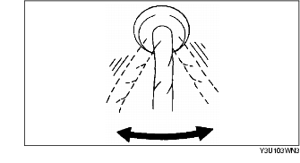
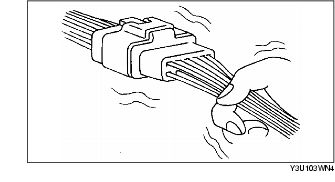
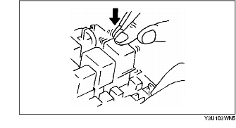
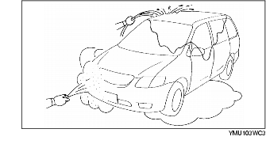

Intermittent concern troubleshooting [ZY]
Vibration Method
1. If malfunction occurs or becomes worse while driving on a rough road or when engine is vibrating, perform the steps below.
- • There are several reasons vehicle or engine vibration could cause an electrical malfunction. Some of the things to inspect for are:
- - Connectors not fully seated
- - Wiring harnesses not having full play
- - Wiring harnesses laying across brackets or moving parts
- - Wiring harnesses routed too close to hot parts
- • An improperly routed, improperly clamped, or loose wiring harness can cause wiring to become pinched between parts.
- • The connector joints, points of vibration, and places where wiring harnesses pass through the fire wall, body panels, etc. are the major areas to be inspected.
Inspection Method for Switch Connectors or Wiring Harnesses
1. Connect the WDS or equivalent to the DLC-2.
2. Turn the ignition switch to the ON position. (Engine off).
3. Access PIDs for the switch you are inspecting.
4. Turn the switch on manually.
5. Slightly shake each connector or wiring harness vertically and horizontally while monitoring the PID.

Inspection Method for Sensor Connectors or Wiring Harnesses
1. Connect the WDS or equivalent to the DLC-2.
2. Turn the ignition switch to the ON position (Engine off).
3. Access PIDs for the switch you are inspecting.
4. Slightly shake each connector or wiring harness vertically and horizontally while monitoring the PID.

Inspection Method for Sensors
1. Connect the WDS or equivalent to the DLC-2.
2. Turn the ignition switch to the ON position (Engine off).
3. Access PIDs for the switch you are inspecting.
4. Vibrate the sensor slightly with your finger.
- • If PID value is unstable or malfunction occurs, check for poor connection and/or poorly mounted sensor.
Inspection Method for Actuators or Relays
1. Connect the WDS or equivalent to the DLC-2.
2. Turn the ignition switch to the ON position (Engine off).
3. Prepare the Output State Control for actuators or relays that you are inspecting.
4. Vibrate the actuator or relay with your finger for 3 s are Output State Control is activated.
- • If variable click sound is heard, inspect for poor connection and/or poorly mounted actuator or relay.

Water Sprinkling Method
- • Indirectly change the temperature and humidity by spraying water onto the front of the radiator.
- • If a vehicle is subject to water leakage, the leakage may damage the control module. When testing a vehicle with a water leakage problem, special caution must be used.
If malfunction occurs only during high humidity or rainy/snowy weather, perform the following steps.
1. Connect WDS or equivalent to DLC-2 if inspecting sensors or switches.
2. Turn the ignition switch to the ON position (Engine off).
3. Access PIDs for sensor or switch if inspecting sensors or switches.
4. If you are inspecting the switch, turn it on manually.
5. Spray water onto the vehicle or run it through a car wash.
